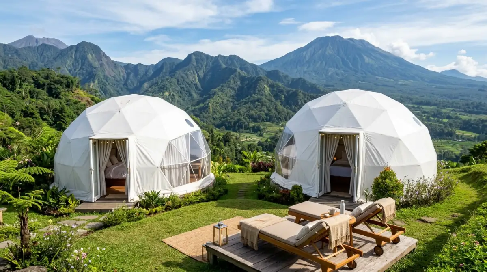

Glamping di Batu — nikmati kemewahan alam terbuka dengan view pegunungan yang memukau.
Glamping di Batu — nikmati kemewahan alam terbuka dengan view pegunungan yang memukau.
Pernah nggak sih kamu merasa waktu berjalan begitu cepat, dari Senin ke Jumat isinya cuma layar laptop, rentetan meeting, dan deadline yang seolah nggak ada habisnya? Tiba-tiba kalender sudah berganti bulan, dan kamu sadar belum sempat benar-benar 'bernapas'.
Rasanya sayang banget kalau masa mudamu atau momen berharga bareng keluarga cuma dihabiskan di depan meja kerja atau terjebak macetnya jalanan kota. Jangan sampai kamu menyesal di kemudian hari karena melewatkan kesempatan menciptakan kenangan manis saat masih punya fisik yang prima dan energi yang penuh.
Sesekali, kamu butuh pelarian yang nyata, bukan sekadar scroll media sosial melihat foto liburan orang lain sambil menghela napas. Nah, buat kamu yang butuh udara segar dan ketenangan paripurna tanpa harus ribet bangun tenda sendiri, glamping di Batu adalah jawaban yang paling masuk akal. Udara pegunungan yang dingin punya cara magis untuk menyembuhkan lelahmu. Mari kita bahas tempat-tempat memukau yang bakal bikin kamu lupa sejenak soal urusan kantor.
Kenapa Harus Memilih Glamping di Batu?
Bayangkan hotel berbintang adalah sebuah ruang kubikel kantor yang nyaman tapi tertutup, sementara glamping adalah momen ketika kamu resign dan membuka usaha sendiri: bebas, menyatu dengan alam, tapi tetap punya kontrol penuh atas kenyamananmu.
Kota Batu, dengan kontur pegunungannya yang memukau dan suhu yang sejuk, menyediakan lanskap sempurna untuk tren glamorous camping ini. Kamu tidak perlu repot membawa sleeping bag atau bingung mencari toilet bersih di tengah malam. Semua fasilitas kelas atas sudah tersedia, namun saat kamu membuka pintu tenda, yang menyapamu adalah kabut pagi dan siluet Gunung Arjuno atau Panderman.
Memilih glamping di Batu juga berarti kamu berinvestasi pada kualitas waktu. Alih-alih sibuk berdebat soal siapa yang harus merakit tenda, kamu dan pasangan atau keluarga bisa langsung duduk santai menyeduh kopi panas, menikmati barbeque, dan ngobrol dari hati ke hati tanpa gangguan notifikasi grup kerja.
7 Rekomendasi Glamping di Batu untuk Staycation
Berikut adalah kurasi tempat glamping terbaik di Batu dan sekitarnya yang bisa kamu jadikan target pelarian akhir pekan ini.
1. Bobocabin Coban Rondo: Canggihnya Teknologi di Tengah Hutan Pinus
Kalau kamu tipe pekerja tech-savvy yang terbiasa dengan smart office, Bobocabin Coban Rondo akan membuatmu merasa familier namun tetap rileks. Tempat ini menggabungkan tenangnya hutan pinus khas Coban Rondo dengan kecanggihan teknologi Internet of Things (IoT). Kamu bisa mengatur warna lampu, musik, hingga tirai jendela smart glass hanya dari aplikasi di smartphone.
Berada di ketinggian yang lumayan, suhu di sini bisa cukup menggigit saat malam hari. Tapi tenang saja, fasilitas yang ditawarkan sangat mumpuni untuk membuatmu tetap hangat.
Fasilitas Unggulan: Smart glass window, kamar mandi dalam dengan water heater, api unggun komunal, speaker Bluetooth, dan paket BBQ yang diantar langsung ke depan kabin.
Perkiraan Harga: Rp 700.000 – Rp 1.200.000 per malam (tergantung tipe kabin standar atau family dan hari pemesanan).
Lokasi Persis: Area Wana Wisata Coban Rondo, Jl. Coban Rondo, Pujon, Kabupaten Malang (berbatasan langsung dengan Batu).
2. Oak Tree Glamping Resort: Kemewahan Ala Level Eksekutif
Pernah dapat bonus tahunan yang lumayan dan ingin rewarding diri sendiri dengan maksimal? Oak Tree Glamping Resort adalah pilihan yang tepat. Estetika tempat ini sangat mewah dengan dominasi material kayu yang elegan, persis seperti ruang kerja seorang CEO, namun bedanya ini berada di tengah alam terbuka. Tenda-tendanya sangat luas, kokoh, dan berjarak cukup jauh satu sama lain sehingga privasi kamu sangat terjaga.
Jalan menuju resor ini juga sangat mudah diakses oleh kendaraan roda empat, tidak perlu melewati tanjakan ekstrem yang bikin jantung berdebar.
Fasilitas Unggulan: Tenda full AC, TV kabel, kolam renang dengan view bukit, teras pribadi untuk bersantai, dan restoran dengan menu Nusantara hingga Western.
Perkiraan Harga: Rp 1.000.000 – Rp 1.800.000 per malam.
Lokasi Persis: Jalan Tawang Argo No.1, Sisir, Kec. Batu, Kota Batu.

Suasana glamping di kawasan Batu — mewah, nyaman, dan menyatu dengan alam pegunungan.3. Lembah Indah Malang: Jernihkan Pikiran di Tenda Dome Edukatif
Kadang, rutinitas kerja membuat pikiran buntu. Seperti butuh sesi brainstorming di luar kantor, kamu butuh suasana visual yang benar-benar berbeda. Lembah Indah Malang menawarkan glamping dengan bentuk tenda dome putih yang sangat estetis berlatar belakang lereng Gunung Kawi.
Tempat ini sangat cocok untuk keluarga karena konsepnya yang terintegrasi dengan wisata edukasi pertanian dan peternakan. Anak-anak bisa berinteraksi dengan hewan, sementara kamu merebahkan diri sambil menatap langit.
Fasilitas Unggulan: Tenda dome estetik, kasur empuk, tur edukasi pertanian, ATV, dan penyewaan alat panggangan BBQ.
Perkiraan Harga: Rp 600.000 – Rp 850.000 per malam.
Lokasi Persis: Desa Balesari, Kecamatan Ngajum, Kabupaten Malang.
4. Pagupon Camp Omah Kayu: Sensasi Tenang di "Rumah Burung"
Dalam bahasa Jawa, pagupon berarti sangkar burung merpati. Konsep inilah yang diusung oleh Pagupon Camp di area Omah Kayu Paralayang. Bentuk penginapannya unik, melengkung setengah lingkaran seperti rumah burung raksasa.
Karena lokasinya yang berada di area Paralayang Gunung Banyak, kamu akan mendapatkan pemandangan lampu kota Batu (city lights) yang luar biasa indah di malam hari, persis seperti taburan bintang di daratan.
Fasilitas Unggulan: Bentuk bangunan instagenik, selimut tebal, akses mudah ke spot sunrise Paralayang, dan udara yang ekstra sejuk.
Perkiraan Harga: Rp 400.000 – Rp 600.000 per malam.
Lokasi Persis: Jl. Gunung Banyak, Gunungsari, Bumiaji, Kota Batu.
5. Bata Merah Guest House & Tent: Nyaman Seperti Tim yang Solid
Kalau kamu mencari tempat yang homey, ramah di kantong, tapi tetap memberikan vibes berkemah yang kuat, Bata Merah adalah jawabannya. Menginap di sini rasanya seperti bekerja dengan tim yang solid—tidak banyak drama, fungsional, dan sangat mendukung mood. Mereka menyediakan area tenda di hamparan rumput hijau yang ditata sangat rapi.
Fasilitas Unggulan: Tenda kanvas tebal tahan angin, matras nyaman, kamar mandi luar yang sangat bersih, dan area taman yang luas untuk lari-lari kecil.
Perkiraan Harga: Rp 350.000 – Rp 500.000 per malam.
Lokasi Persis: Jl. Mawar Putih, Gunungsari, Bumiaji, Kota Batu.
6. Apache Camp Coban Talun: Sisi Liar yang Terkendali
Bosan dengan rutinitas yang itu-itu saja dan butuh inspirasi out of the box? Cobalah menginap di Apache Camp. Seperti namanya, tempat glamping ini didesain menyerupai perkampungan suku Indian Apache. Tenda-tendanya berbentuk kerucut tinggi yang sangat ikonis.
Lokasinya berada di kawasan wisata Coban Talun, yang berarti di pagi hari kamu bisa langsung trekking ringan menuju air terjun.
Fasilitas Unggulan: Desain tenda tematik Indian, penyewaan kostum Indian untuk foto, kantin 24 jam, dan akses dekat ke air terjun.
Perkiraan Harga: Rp 200.000 – Rp 350.000 per malam (sangat budget-friendly).
Lokasi Persis: Kawasan Wisata Coban Talun, Tulungrejo, Bumiaji, Kota Batu.
7. Shanaya Resort: Ketenangan Hakiki Ala Cuti Panjang
Ini adalah definisi dari sabbatical leave atau cuti panjang yang memulihkan. Shanaya Resort menawarkan pengalaman glamping dengan rumah-rumah kayu (wood lodge) yang bertingkat dan menyatu dengan perbukitan hijau.
Fasilitasnya sangat premium. Saat kabut turun di sore hari, suasananya berubah menjadi sangat romantis. Sangat direkomendasikan untuk pasangan yang sedang honeymoon atau merayakan hari jadi.
Fasilitas Unggulan: Lodge kayu premium, balkon pribadi, hot tub (di tipe tertentu), layanan buggy car, dan area jogging track yang asri.
Perkiraan Harga: Rp 800.000 – Rp 1.500.000 per malam.
Lokasi Persis: Jl. Raya Ngijo Karangploso, Malang (Akses langsung ke Kota Batu).
Kesimpulan: Jangan Tunda Bahagiamu
Pada akhirnya, karir dan pekerjaan memang penting untuk masa depan, tapi kewarasan dan kebahagiaanmu di masa kini jauh lebih berharga. Bayangkan sepuluh tahun dari sekarang, hal yang paling kamu ingat bukanlah berapa banyak email yang berhasil kamu balas di hari Minggu, melainkan seberapa hangat tawa keluargamu saat memanggang marshmallow di bawah langit malam Kota Batu.
Jangan menunggu sampai tubuhmu benar-benar kelelahan atau momen kebersamaan terlewat begitu saja. Tempat-tempat glamping di atas sering kali penuh (terutama saat weekend), jadi ambil kalendermu sekarang, ajukan cuti satu atau dua hari, dan wujudkan staycation impianmu. Udara sejuk pegunungan Batu sudah menunggumu untuk menarik napas panjang dan melepaskan semua penat.
FAQ — Glamping di Batu